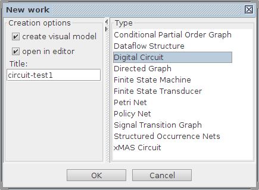
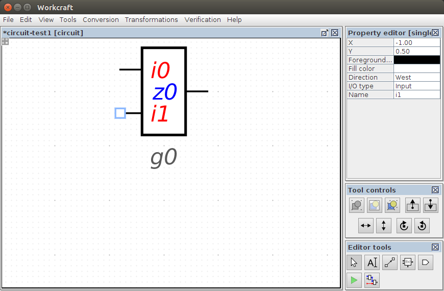
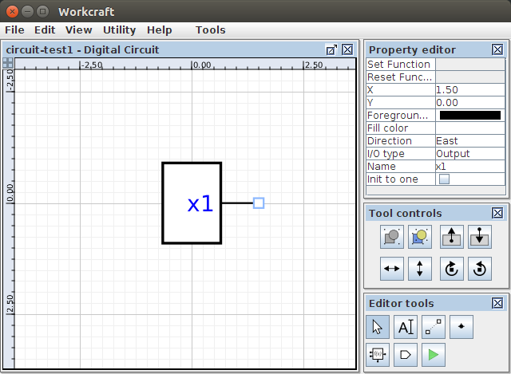
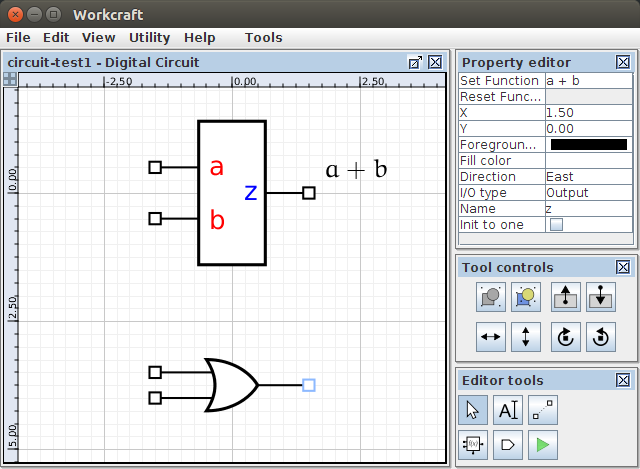
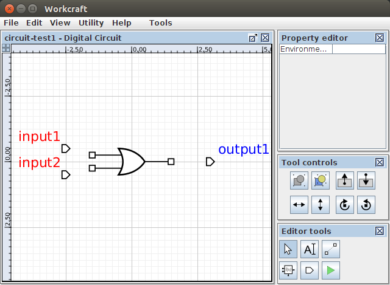
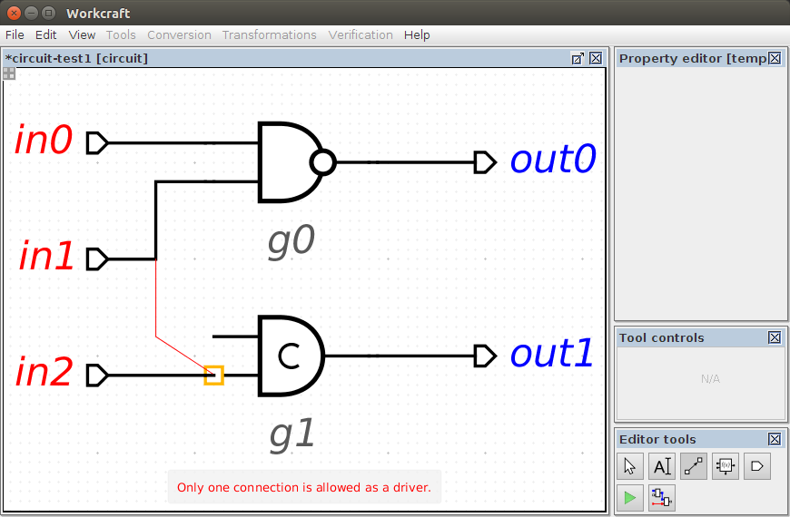
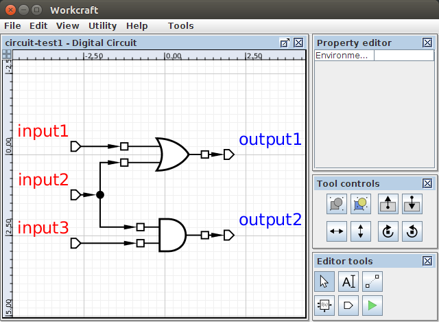
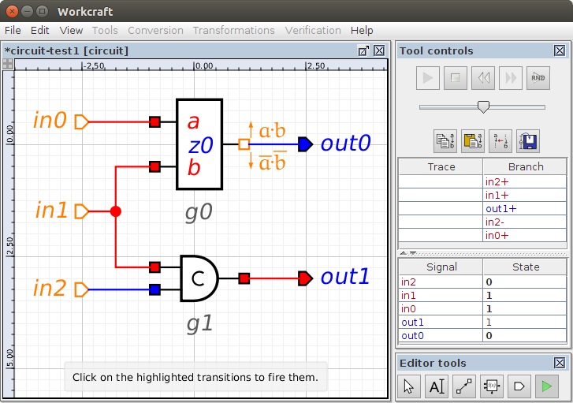
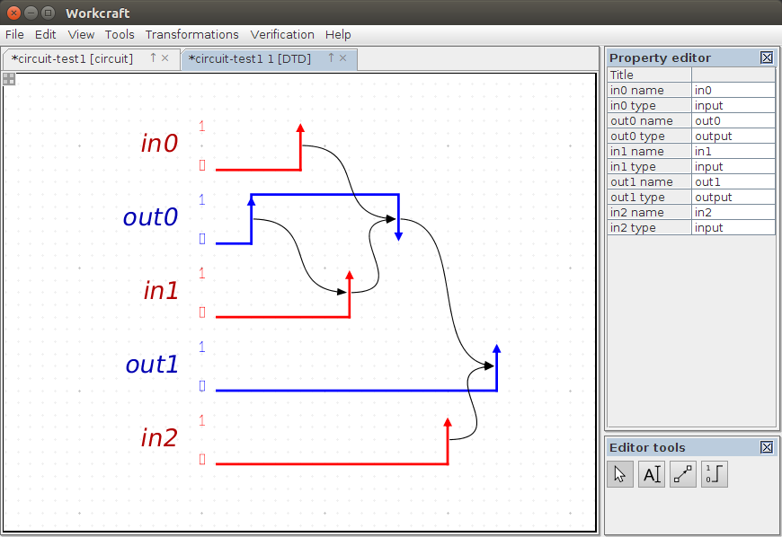
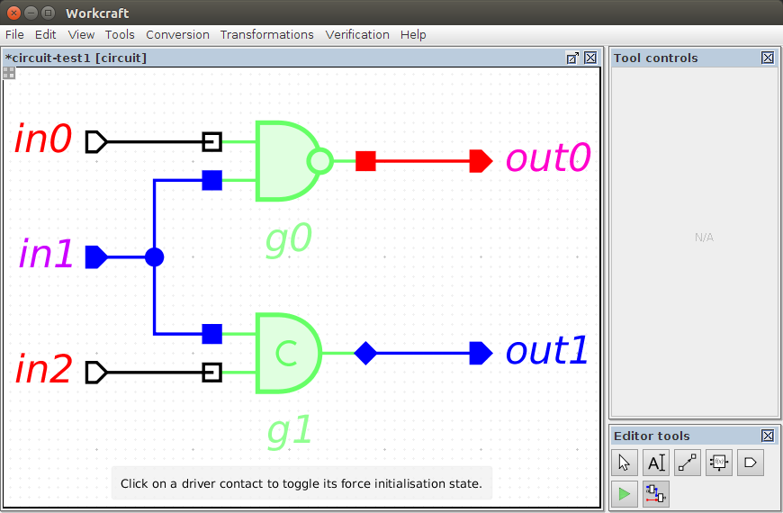

Table of Contents
Digital Circuit plugin
Familiarise yourself with Workcraft interface to learn its common features that are available for all plugins.
This plugin is intended for capturing, simulation and verification of asynchronous digital circuits. For simulation and verification the circuit is automatically translated into a Signal Transition Graph (STG) that allows re-using the features of the STG plugin.
Capturing
In order to create a circuit model choose File→Create work… menu item and in the New work dialogue select Digital Circuit as the model type.

Functional components
The main building blocks of a digital circuit are functional components that can be created with the function generator ![[F] Function](editor_tools-function.png "[F] Function") . Initially a generated component has only a single output pin (
. Initially a generated component has only a single output pin (z0 by default). New pins can be added through the Add output or Add input items of the popup menu (accessible by right-clicking the component). The pin name and type can be changed in the property editor – see Name and I/O type properties respectively.

Initially the output pin has neither set nor reset functions assigned. The set/reset functions can be specified by selecting the output pin and entering the corresponding Boolean expressions in the Set function and Reset function entries of the property editor. Note that if a component has a single output pin (which if is the majority of logic gates) then the set/reset functions can be also modified in the properties of the component.

A component visualisation is defined by its Render type selected in the property editor, as follows:
- Box – the component is visualises as a box with explicitly named pins and their set and reset functions rendered next to them. This render type is convenient when a component has more than one output or its set/reset functions are too complex.
- Gate – the set and reset functions of a single component output are visualised using the traditional graphical mnemonics for Boolean operations. The obtained result is free of textual information (even the pins are not labelled) and therefore is usually easier to comprehend. Rendering a component as gate is convenient when it has a single output with relatively simple set/reset functions. This is the default rendering type with the following visualisation rules:
- If both set and reset functions are specified then the component is rendered as a C-element.
- If only the set function is specified, then the reset function is assumed to be complimentary and the component is rendered as a combinational gate (possibly with several layers of logic).
- If the component cannot be rendered as a gate, e.g. because its set function is not empty or it has several output pins, then the Box visualisation is used.

Usually it is not necessary to explicitly create input pins. When a Set function or Reset function is entered for an output pin, the missing input pins are automatically created for all the literals in the Boolean expressions. Note that the input pins do not disappear if they become unneeded after modification of the set/reset functions. You may need to manually remove those pins by first selecting them and then pressing Delete button.
Input and output ports
Other building blocks of a digital circuit are its primary input and output ports. These are used to interact with the circuit environment. The ports are created with the port generator ![[P] Input/Output port](editor_tools-port.png "[P] Input/Output port") – just activate this editor tool and click the editor panel in a position you want to place the port. By default an output port is created, however, if you hold Shift while clicking the editor panel then an input port is created. Note that you can change the of existing port I/O type in the property editor too.
– just activate this editor tool and click the editor panel in a position you want to place the port. By default an output port is created, however, if you hold Shift while clicking the editor panel then an input port is created. Note that you can change the of existing port I/O type in the property editor too.

Connections
When the connection tool ![[C] Connect](editor_tools-connect.png "[C] Connect") is active you can connect the pins of the circuit components and primary ports. The output pins and the input ports can be connected either to the input pins or to the output ports. Several connections may start at the same output pin or an input port, however, only a single connection can end up at an input pin or an output port. If an incorrect connection is attempted (e.g. a connection from an input pin to an output port or more than one connections to an input pin) then a warning message will be issued.
is active you can connect the pins of the circuit components and primary ports. The output pins and the input ports can be connected either to the input pins or to the output ports. Several connections may start at the same output pin or an input port, however, only a single connection can end up at an input pin or an output port. If an incorrect connection is attempted (e.g. a connection from an input pin to an output port or more than one connections to an input pin) then a warning message will be issued.

In order to reduce the number of arcs going from the same output pin (or an input port) and simplify the layout of the connection arc, one can “fork” the wires – just start a connection from an existing wire and a joint point will be automatically created. New connections can be also started from the existing joint points.

Editing
For editing the model activate the selection tool ![[S] Select](editor_tools-select.png "[S] Select") . All the standard editing features (select, drag-and-drop, delete, copy, undo, group, etc.) work the same – see generic help on Selection controls and Property editor for details.
. All the standard editing features (select, drag-and-drop, delete, copy, undo, group, etc.) work the same – see generic help on Selection controls and Property editor for details.
Similar to all the other models, textual comments can be created by activating the ![[N] Text Note](editor_tools-text_note.png "[N] Text Note") tool and clicking the editor panel in the position you want to put the text. Double-click on the note box to edit its text label in-place or do it through the property editor panel when the note is selected.
tool and clicking the editor panel in the position you want to put the text. Double-click on the note box to edit its text label in-place or do it through the property editor panel when the note is selected.
Simulation
For simulation of a Digital Circuit model activate the simulation tool ![[M] Simulate](editor_tools-simulate.png "[M] Simulate") . The enabled pins and ports are highlighted and can be activated by clicking them. The simulation tool controls provide the means for analysis and navigation through the simulation trace, see generic help on Simulation controls for details. The circuit simulation is just an abstraction over the simulation of an automatically generated STG representation of the circuit components. Therefore all the specifics of STG simulation also apply to the Digital Circuit plugin.
. The enabled pins and ports are highlighted and can be activated by clicking them. The simulation tool controls provide the means for analysis and navigation through the simulation trace, see generic help on Simulation controls for details. The circuit simulation is just an abstraction over the simulation of an automatically generated STG representation of the circuit components. Therefore all the specifics of STG simulation also apply to the Digital Circuit plugin.
The state of circuit's signals is visualised by colouring the corresponding pins and wires either blue (for logical 0) or red (logical 1). Circuit pins associated with excited signals are highlighted and can be clicked to progress to the next state.
By default the circuit driver pins (input ports and the gate output contacts) are initialised to logical 0. This may lead to some of the circuit internal signals being excited when the simulation begins, e.g. the output out0 is 0, but evaluates to 1 (first transition in the simulation trace). There are two ways to change the initial values to the circuit signals:
- A driver pin can be set to logical
1by ticking the Init to one property of the pin. - Alternatively, in simulation mode, when a desired association of signal values is reached, this state can be saved as the initial state of the circuit by pressing this button –
 .
.

A circuit simulation trace can be converted to a Digital Timing Diagram by the generator of trace diagram  . The order, visibility, and color of signal waveforms are specified in the signal state table – see STG simulation help for details.
. The order, visibility, and color of signal waveforms are specified in the signal state table – see STG simulation help for details.

Verification
Verification of a digital circuit is usually made in the context of its environment. The environment can be described as an STG and attached to the circuit model using the property editor when no nodes are selected.
When a verification task is issued via the Verification menu, the circuit is first translated into an STG that is subsequently composed with the STG of the environment. The resultant STG is used for verification of the desired properties:
- Conformation [MPSat] – verify if the circuit conforms to the environment specification.
- Deadlock [MPSat] – verify if the circuit is deadlock-free.
- Output persistency [MPSat] – verify if the circuit is output-persistent.
- Conformation, deadlock and output persistency (reuse unfolding) [MPSat] – verify if the circuit conforms to the environment specification, is deadlock-free and output-persistent under the given environment.
Initialisation
Initialisation (or reset) of a speed-independent circuit is a crucial part of the design process because a circuit can malfunction if its initial state is incorrect. There are several ways of circuit initialisation, that are usually used in combination:
- Rely on the initial state of the circuit inputs that propagate through the logic gates to initialise the internal and output signals.
- Insert additional gates to explicitly initialise the internal and output signals.
- Substitute sequential gates with their set/reset counterparts that are initialised to
1/0respectively.
The Initialisation analyser ![[I] Initialisation analyser](editor_tools-initialisation_analysis.png "[I] Initialisation analyser") tool visualises the propagation of signals with forced initial state through the circuit logic and helps to make a decision on how to properly initialise the circuit.
tool visualises the propagation of signals with forced initial state through the circuit logic and helps to make a decision on how to properly initialise the circuit.
Consider our circuit example whose all signals are initially expected (but not guaranteed!) to be 0, i.e. none of the driver pins have their Init to one property set. Let us assume that circuit's environment forces in1 port to be in the expected state and indicate this by setting its Forced init property. Now study the initial state of the circuit by activating the initialisation analyser tool.

One can see that the initial state of gate g0 contradicts the propagated value from port in1. The problematic gate is highlighted in orange and the conflict on its output is visualised as follows: the contact is blue (represents the expected value of 0), while its outline is red (representing the propagated value 1). Another thing to note is that the C-element g1 could not be properly initialised by forcing a single input (both its inputs need to have the same state to unambiguously define the output) – the wires and pins that are initially undefined are not colourised.
To address the above issues activate the selection tool and alter the circuit as follows:
- Change the expected state of gate
g0output to1by ticking its Init to one property. - Force the initialisation of gate
g1output by ticking its Force init property – this models an explicit reset of the C-element and requires an implementation with a reset pin.
When initialisation analyser is active one can click on the driver pins to toggle their Forced init property.
Now the circuit is correctly initialised – all the gates are highlighted in green. Note the diamond shape of the C-element output – this is to visualise the forced initialisation of the gate output (how this is achieved is outside the scope of this document).

The colours associated with logical levels and gate initialisation state can be redefined in redefined in Digital Circuit settings accessible via Edit→Preferences… menu.